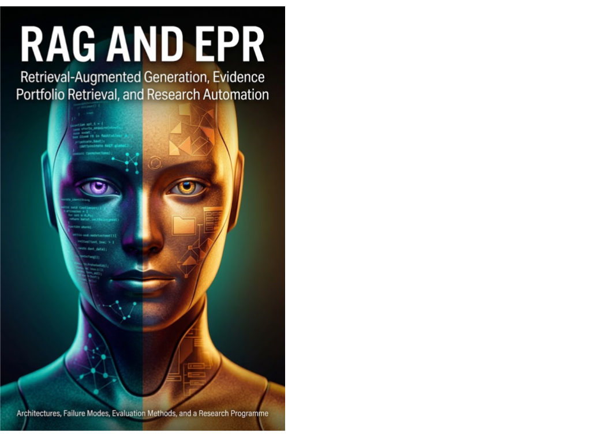

AI Systems & Infrastructure · Axiologic Research Editions
RAG and EPR
Retrieval-Augmented Generation, Evidence Portfolio Retrieval, and Research Automation
Follow a question from raw documents to a decision and watch how many places evidence can disappear, distort, or become overconfident. Then confront a harder retrieval problem: not finding the closest passages, but assembling the smallest defensible body of evidence for deciding what is new, credible, or worth testing.
Retrieval is part of the reasoning system
Retrieval-augmented generation is often described as a simple addition of documents to a model prompt. This book takes the harder view: source acquisition, versioning, chunking, indexing, query interpretation, ranking, context construction and output policy are all decisions that shape the resulting claim. The corpus is not passive background. In an operational sense, it is part of the model.
RAG and EPR maps the modern retrieval stack, from sparse, dense, hybrid and late-interaction methods to advanced architectures and benchmark design. It also follows failures across the whole information path: unavailable or stale sources, misleading chunks, query ambiguity, top-k truncation, unsupported answers, injection and weak provenance.
From top results to an evidence portfolio
Why is independent top-k ranking insufficient? In many scientific tasks, the relevant object is not the best single passage or a list of individually relevant passages. It is an evidence configuration: perhaps a supporting result, a contradiction, a boundary condition, a method limitation and a source with different status. Ranking items independently can miss the combination needed for a sound decision.
What is Evidence Portfolio Retrieval? EPR is the book’s proposed research programme for selecting a bounded, diverse and traceable set of evidence units in relation to a downstream judgment. It does not replace RAG; it defines a stricter objective for cases where a model, analyst or agent must justify a scientific decision under a fixed context budget.
How should it be evaluated? Not with retrieval metrics alone. Recall, precision and ranking remain useful diagnostics, but the primary measure should be downstream decision quality at a declared budget: can the selected portfolio preserve conflicts, expose a decisive flaw, support an appropriate uncertainty level or improve a reviewer’s final judgment?
The relevant output of a scientific retrieval system is often an evidence configuration, not a bag of highly ranked passages.
Automation that remains answerable
The final chapters bring architecture into governance. A retrieval system needs source identity, status and version families; it needs provenance that can be inspected; and it needs security and accountability appropriate to the decisions it informs. The book is for builders who want research automation to become more than a fluent interface over documents: a system that can make its evidence choices visible enough for human correction.